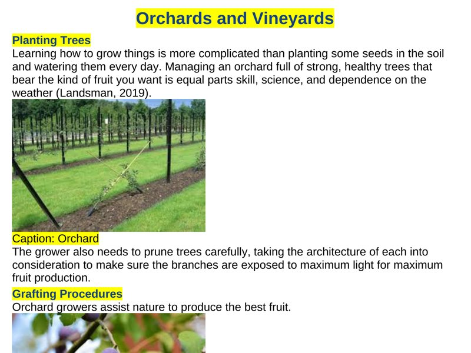

Technology, Access & Learning
Teaching by Design
A professional learning space focused on purposeful technology integration, inclusive instruction, and practical ideas for today's classrooms. My goal is to explore how technology can expand access, support learner differences, and create meaningful opportunities for students to collaborate, create, and think critically.

Latest writing

Accessibility by Design: Six Small Changes That Make a Big Difference
What it took to make a two-page learning object accessible, and why passing an automated check is not the goal.